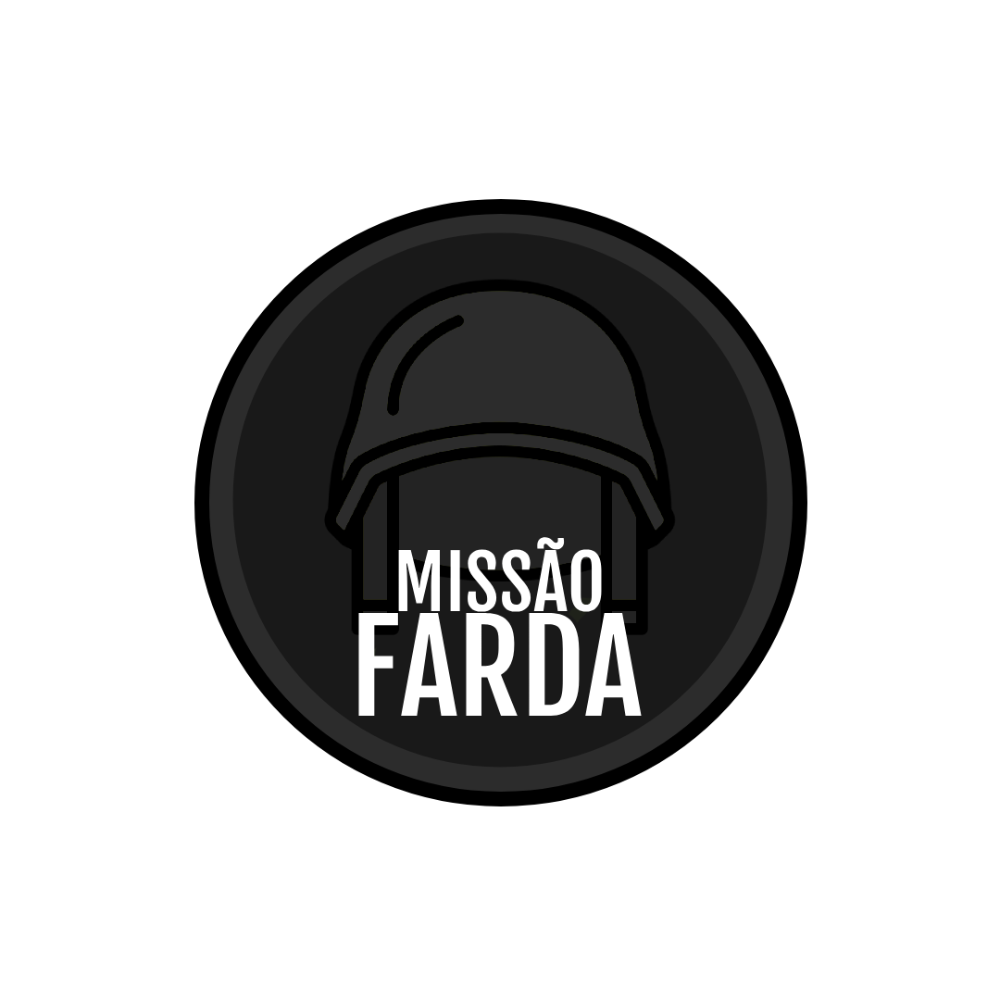

Missão Farda é um projeto dedicado ao desenvolvimento de futuros militares, reunindo informações, conteúdos e práticas que ajudam na preparação e no aprendizado de forma organizada e acessível. O diferencial do MF é a interação entre candidatos, alunos em formação e formandos. Trazendo assim, uma experiência única e incentivando o estudo!